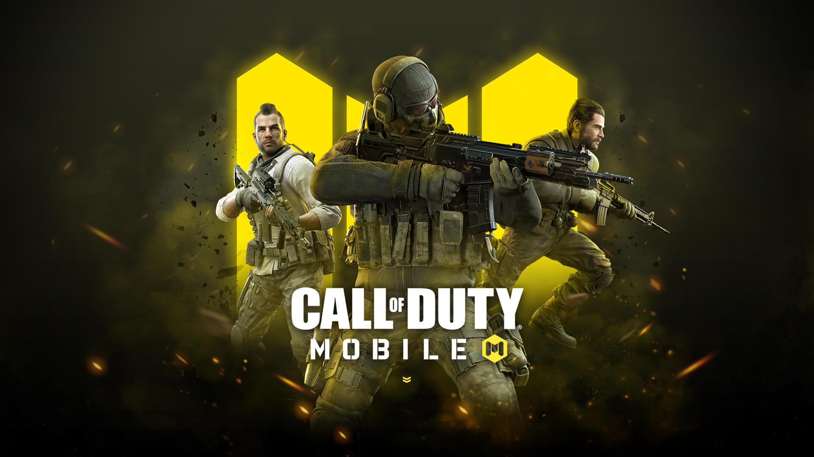
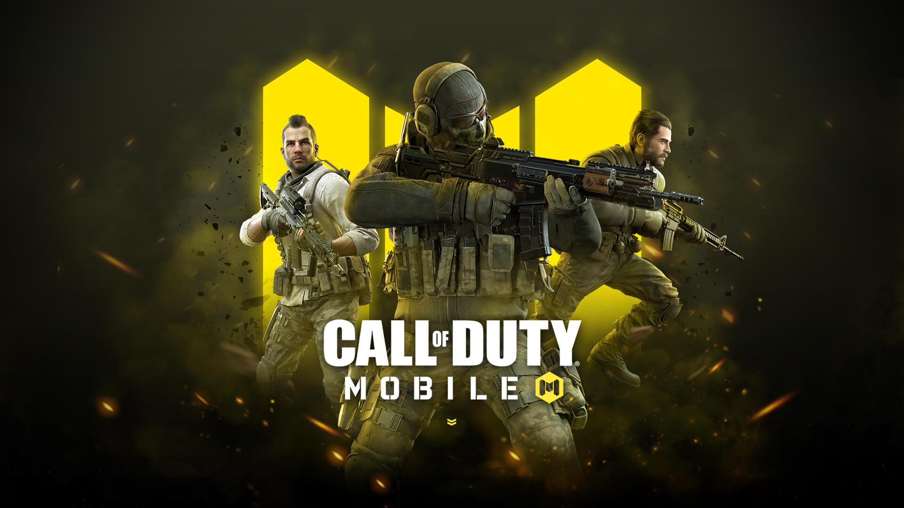

Trending Today
Here are some popular games which are trending now.
|  |  |
 |
Here are some popular games which are trending now.
|  | |
|
Call of Duty is a 2003 first-person shooter game developed by Infinity Ward and published by Activision. It is the first installment in the Call of Duty franchise, released on October 29, 2003, for Microsoft Windows. Wikipedia Developers: Infinity Ward, Nokia Initial release date: 29 October 2003 Genres: First-person shooter, Adventure game Publishers: Activision, Activision Blizzard, Aspyr, Nokia Composer: Michael Giacchino Mode: Multiplayer video game Awards: BAFTA Games Award for Best Game, VGX Award for Best First-Person Action.
The iconic first-person shooter game is back! Cross play, free maps and modes, and new engine deliver the largest technical leap in Call of Duty history.
Marvel's Spider-Man is a 2018 action-adventure game developed by Insomniac Games and published by Sony Interactive Entertainment. Wikipedia Initial release date: 7 September 2018 Developer: Insomniac Games Genres: Open world, Action-adventure game, Nonlinear gameplay Platforms: PlayStation 5, PlayStation 4, Microsoft Windows Mode: Single-player video game Nominations: The Game Award for Game of the Year, MORE Composer: John Paesano
 |
In Marvel's Spider-Man Remastered, the worlds of Peter Parker and Spider-Man collide in an original action-packed story.
Grand Theft Auto V is a 2013 action-adventure game developed by Rockstar North and published by Rockstar Games. It is the seventh main entry in the Grand Theft Auto series, following 2008's Grand Theft Auto IV, and the fifteenth instalment overall. Wikipedia Initial release date: 17 September 2013 Platforms: PlayStation 5, PlayStation 4, Xbox One, PlayStation 3, MORE Developers: Rockstar Games, Rockstar North Modes: Multiplayer video game, Single-player video game Awards: VGX Award for Best Soundtrack, MORE Nominations: VGX Award for Best Soundtrack, MORE Composers: Tangerine Dream, Oh No, The Alchemist, Woody Jackson.
 |
Grand Theft Auto Online. Experience GTA Online, a dynamic and ever-evolving online universe for up to 30 players, where you can rise from street-level hustler.
God of War is an action-adventure game franchise created by David Jaffe at Sony's Santa Monica Studio. It began in 2005 on the PlayStation 2 video game console and has become a flagship series for PlayStation, consisting of nine installments across multiple platforms. Wikipedia Developers: Javaground, Santa Monica Studio, Ready at Dawn, Bluepoint Games, Daybreak Game Company Designers: Cory Barlog, David Jaffe, Mark Simon Publishers: Sony Interactive Entertainment, PlayStation Studios, Capcom, Sony Pictures, Sony Interactive Entertainment Europe Nominations: VGX Award for Strongest Heroes of All Time Writer(s): Marianne Krawczyk (Greek games); Matt Sophos (Norse games); Richard Gaubert (Norse games)
 |
God of War · Enter the Norse realm · Grasp a second chance · Journey to a dark, elemental world of fearsome creatures · Engage in visceral, physical.